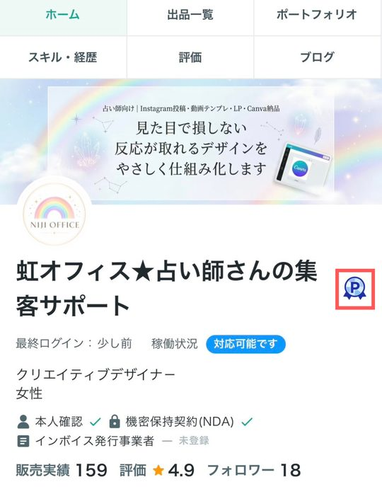
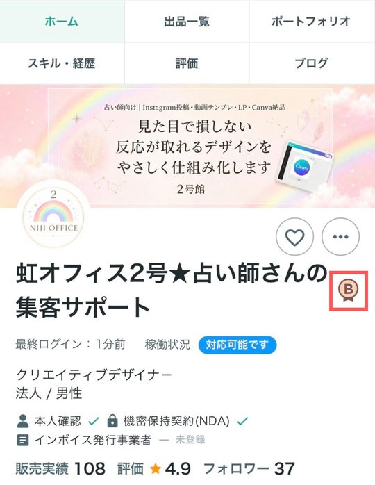
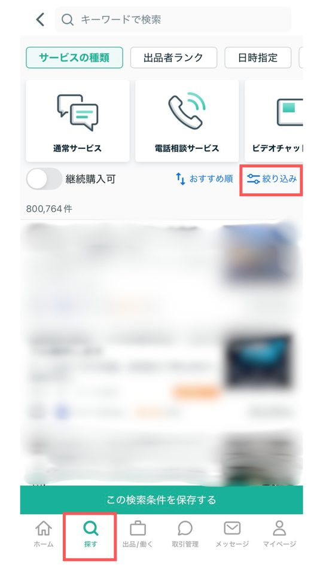
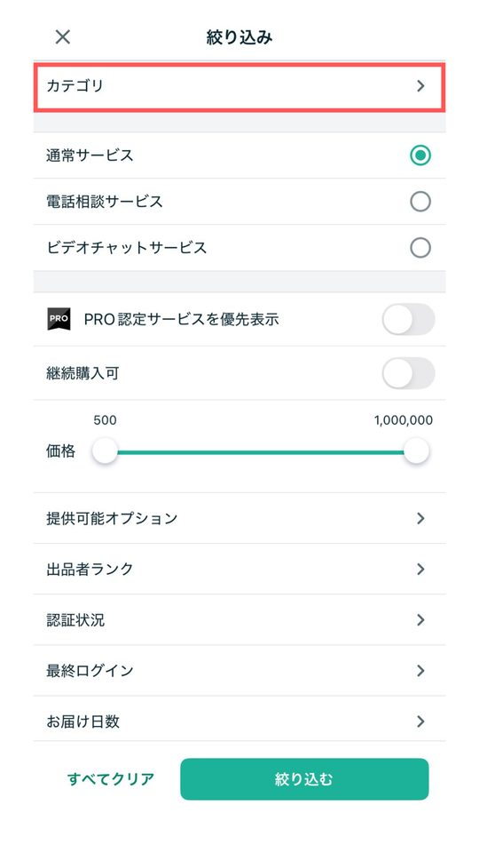
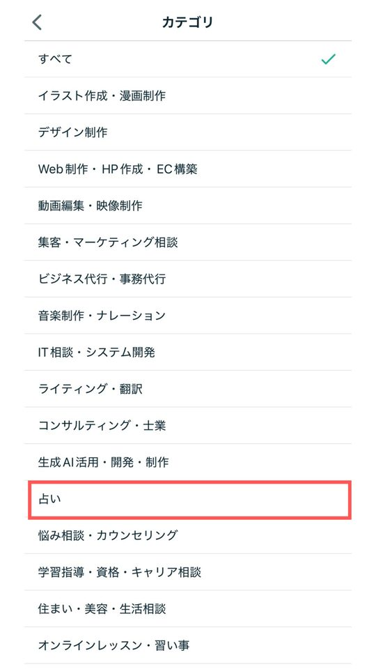
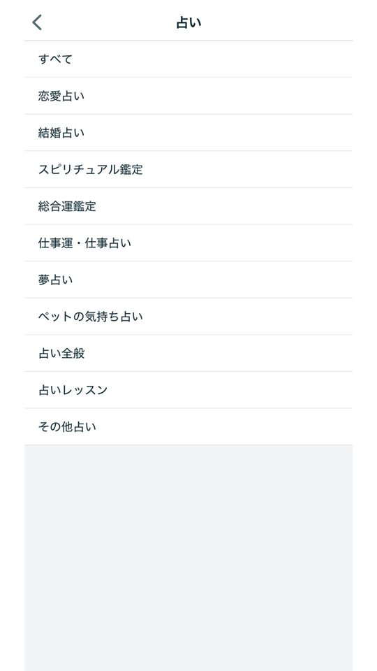
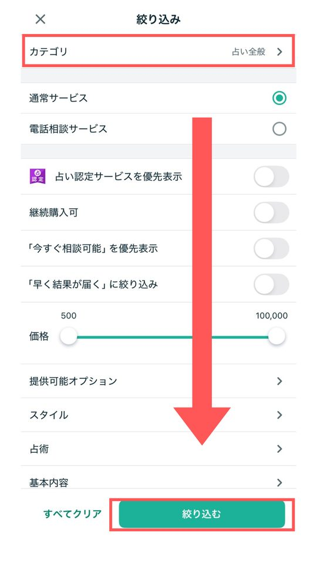
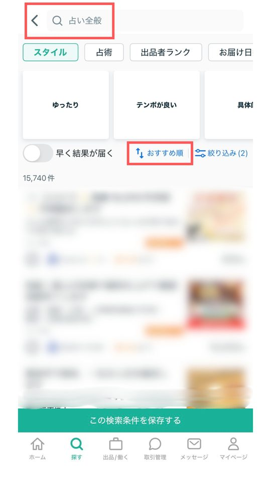
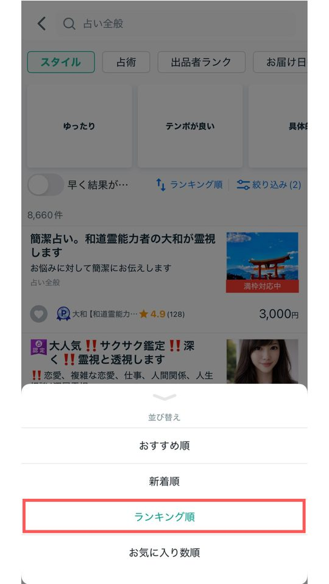
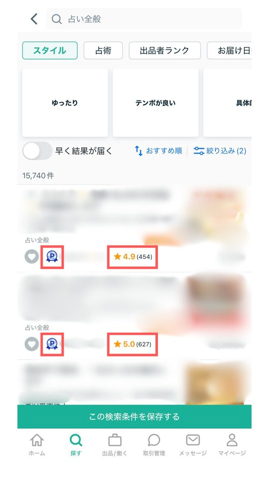

ココナラの仕組みとお金の流れを知り、ChatGPTを使える状態にする。
「本当に稼げるの？」「自分にできるの？」という不安を残したままだと、途中で手が止まってしまいます。最初にココナラの仕組みとお金の流れを知り、ChatGPTを使える状態にしておくことが、この先すべての土台になります。
ココナラってどんなところ？
ココナラは、得意なことを売り買いできる国内最大級のスキルマーケットです。会員数は500万人を超え、占いはその中でも人気のカテゴリです。
クレジットカード・コンビニ払い・キャリア決済などの支払いは、ココナラがまとめて受け付けてくれます。代金の未払いを心配せずに、鑑定に集中できます。集客から支払いまで全部自分で用意するより、ずっと始めやすい仕組みです。
出品者ランクの仕組み
公式ガイド販売実績や評価に応じて、5段階のランクがつきます。ランクが上がるほど信頼され、検索でも目にとまりやすくなります。
| ランク | 主な条件 |
|---|---|
| レギュラー | 有料の販売が累計1件以上 |
| ブロンズ | 有料の販売が累計10件以上、納品完了率80%以上 |
| シルバー | 直近3ヶ月の有料販売10件以上、納品完了率85%以上 |
| ゴールド | 直近3ヶ月の販売額5万円以上、平均評価4.8以上、本人確認済み など |
| プラチナ | 直近3ヶ月の販売額10万円以上、平均評価4.8以上、本人確認済み など |
- ブロンズ以上は毎月1日に更新されます。条件を満たさなくなると下がることもあります。
- ゴールド以上には本人確認が必要です。STEP 1で済ませておきましょう。


お金の流れ
公式ガイド例：3,000円の鑑定が1件売れたら、3,000円 − 手数料660円 ＝ 2,340円が売上になります。
- 振込手数料の160円は、3,000円以上をまとめて振込申請すれば無料です。
- 月曜〜日曜に振込申請すると、翌週の木曜日中に振り込まれます。
- 売上は120日以内に振込申請しないと失効します。カレンダーに入れておきましょう。
- 電話相談とビデオチャットは、手元に残る割合が違います（STEP 6で説明します）。
売れている人を見てみる
占いカテゴリのランキング上位には、プラチナランクで売上を出し続けている人がたくさんいます。まずは自分の目で「ここまで実績を積んでいる人がいる」ことを確かめてみましょう。
「絶対に稼げる」「誰でも同じ結果になる」とは言えません。ここで見るのは「実績を積んでいる人が実際にいる」という事実で、収入の保証ではありません。
ランキングの見方（スマホアプリの画面です）








画像を押すと大きく表示されます。横にスクロールできます。
上位の人のプロフィールやサービスの文章で、気づいたことをメモしておきましょう。STEP 2で本格的に分析します。
ChatGPTを使えるようにする
このガイドのツールとプロンプトは、すべてChatGPTに貼り付けて使います。ここでつまずくと、この先のステップがすべて止まってしまうので、最初に試しておきましょう。
- ChatGPTのアカウントを作る無料版で始められます。このガイドは無料版でも進められます
- 下のプロンプトをコピーして、ChatGPTに貼って送る
- 「準備できました」と返ってきたら成功です
あなたは占い師の副業をサポートするアシスタントです。 これからこの会話の中で、ココナラに出品する文章や画像のアイデアを一緒に考えていきます。 まずは「準備できました」と一言だけ返してください。
5つのツールの共通の使い方
虹オフィスツールこのガイドブックには、虹オフィスのツールのうちサムネイル工房がついています（登録不要）。ほかの4つは別売りです。ツールが「ChatGPTへの依頼文（プロンプト）」を作り、それをChatGPTに貼って答えをもらう、という流れはすべて同じです。
- ツールに情報を入力するURLや、あなたの占術・得意なことなど
- できたプロンプトをコピーする
- ChatGPTに貼り付けて送る
- 出てきた答えを、自分の言葉に直して使うそのまま使わず、必ず自分の言葉に直すのがコツです
スマホでのコピペと切り替え
スマホで進めるときは、「ツール」「ChatGPT」「メモ」の3つを行き来します。最初に流れを覚えておくと迷いません。
準備
- ChatGPTはアプリを入れておく：App Store・Google Playで「ChatGPT」アプリを入れて、ログインしたままにしておきます。
- ツールはブラウザで開いておく：SafariやChromeでツールを開いたままにしておけば、ChatGPTから戻ってきても入力した内容が残っています。
- メモアプリを1つ決める：ChatGPTの答えをためておく場所です。iPhoneの「メモ」やGoogleドキュメントなど、使い慣れたもので大丈夫です。
ツールからChatGPTへ
- ツールの「コピー」ボタンを押すプロンプトがまるごとコピーされます
- ChatGPTのアプリに切り替える
- 入力欄を長押しして「ペースト」（貼り付け）を押す
- 送信ボタンを押す
ChatGPTの答えをメモに保存
- 答えの下にあるコピーのマーク（四角が2つ重なったマーク）を押す答えがまるごとコピーされます
- メモアプリに切り替えて、長押しして「ペースト」
- あとで探しやすいように、一番上に「STEP 2 競合リサーチの答え」のような見出しをつける
アプリの切り替え方
- iPhone：画面の一番下から上にゆっくりスワイプして、途中で指を止めると、開いているアプリが並びます。横にスワイプして選びます（ホームボタンがある機種は、ホームボタンを2回押します）。
- Android：画面下の「□」ボタンを押すか、下から上にスワイプして途中で止めると、開いているアプリが並びます。
プロンプトが長いステップ（STEP 2・4・9）は、パソコンで進めるとずっと楽です。ツールとChatGPTを横に並べて開けば、切り替えもいりません。
続けるための3つの心構え
評価が伸びない最初の1〜2か月でやめてしまう人がほとんどです。先に心構えを持っておくだけで、同じ作業でも続けやすくなります。
- 一度始めたら簡単にやめない：評価や実績は積み上げです。休んだり再開したりするたびに、振り出しに戻りやすくなります。
- 最初の数件は、利益が少なくても続ける：ランクと実績という「財産」を作る期間だと考えましょう。
- 結果が出るまでやめない：占いは積み上げ型なので、効果が出るまで数件〜数か月かかるのがふつうです。「結果が出ない＝向いていない」ではなく「まだ積み上げの途中」です。